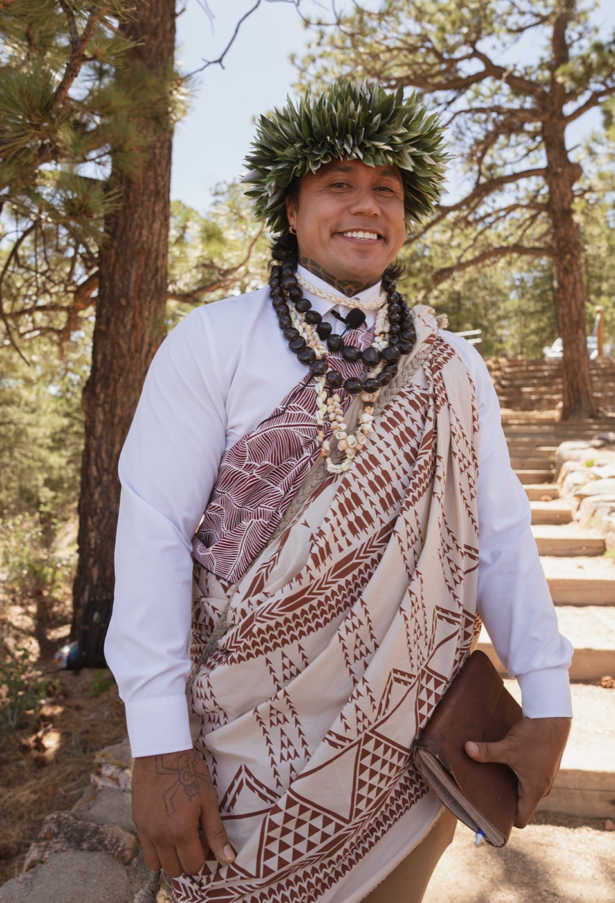
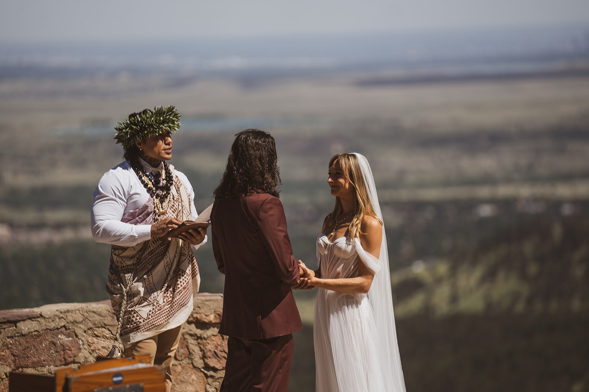
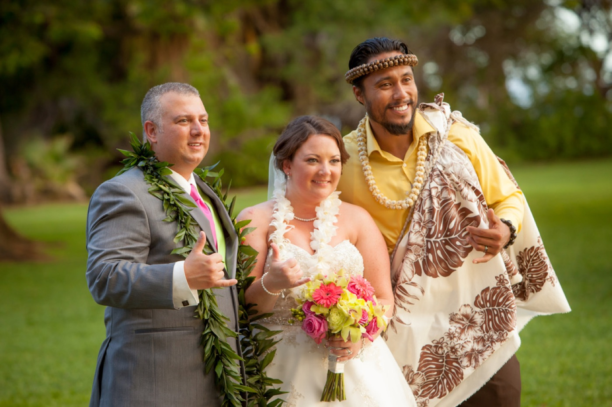
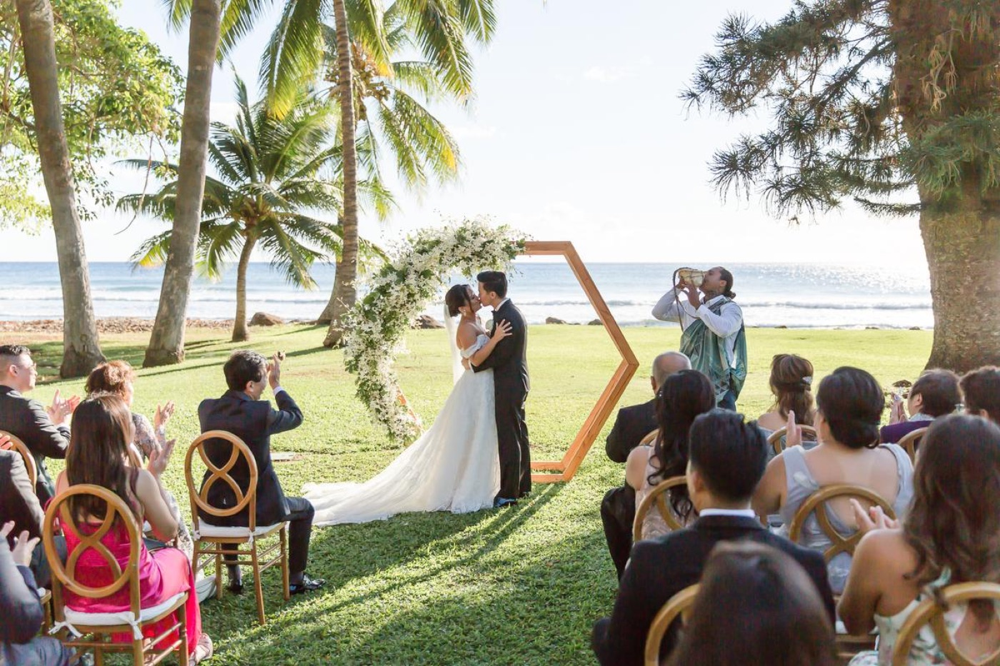

Maui Wedding Officiant
Your wedding, held with care.
Over 15 years, I have married more than 1,000 couples on Maui, at beaches, resorts and private venues. Every ceremony is written with the couple, from intimate elopements to large resort weddings.

Ceremonies I lead
Weddings and elopements
From two people on a beach at sunset to a full resort celebration.
Vow renewals
A chance to say it again, with the people who have walked with you since.
Remembrance
Funerals and celebrations of life that honor a loved one and hold the family.
Blessings
Land, home and business blessings, and baby blessings to welcome a new child.

How it works
Three simple steps.
- A free 15-minute call. Tell me what you want to do, and I am here to help you make it happen.
- We shape the ceremony together. Your vows, readings and family traditions, with Hawaiian elements if you want them. As an ordained minister I also offer premarital counseling for couples preparing for marriage, at $250 per 60-minute session over Zoom. It is spiritual and practical guidance from a minister, not therapy.
- Your day. I arrive ahead of the start to settle in with you and your guests, then lead the ceremony from the first aloha to the pronouncement.



What couples say
Rated 4.6 out of 5 by couples on Yelp
Couples have written about their ceremonies with me for more than a decade. You can read their reviews on Yelp, listed under my ministerial name, Kahu Kaalekahi.
Questions
Wedding questions
How much does a Maui wedding ceremony cost?
Every ceremony is quoted around your day: the date, location, guest count and what you would like included. Book a short call or send me a note with your plans, and I will reply with a quote.
Where on Maui do you officiate?
Anywhere on Maui, including beaches, resorts, private homes and wedding venues.
Can our ceremony include Hawaiian traditions?
Yes. Many couples choose an aloha greeting, a lei exchange and the Oli Aloha chant. If you would rather keep it simple or bring in traditions from your own families, we can shape the ceremony that way instead.
Can we write our own vows?
Yes. Every part of the ceremony can be changed, including your vows, readings and poems. You can read a full sample on the wedding script page.
Do you officiate elopements and vow renewals?
Yes. I lead intimate elopements, large resort weddings and vow renewals with the same care.
Planning a Maui wedding?
Book a short call and tell me about your day. I will reply with availability and next steps.